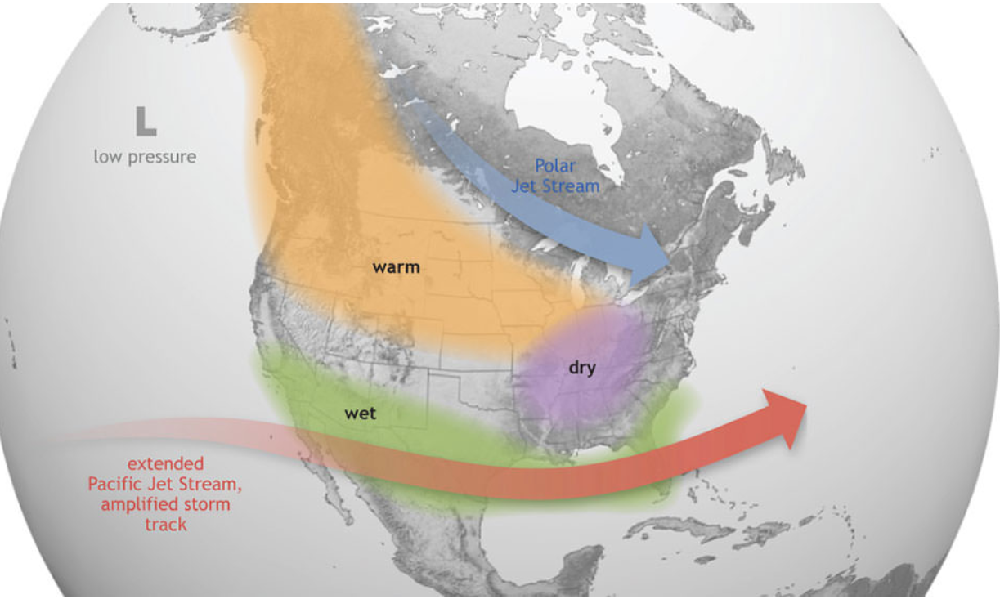
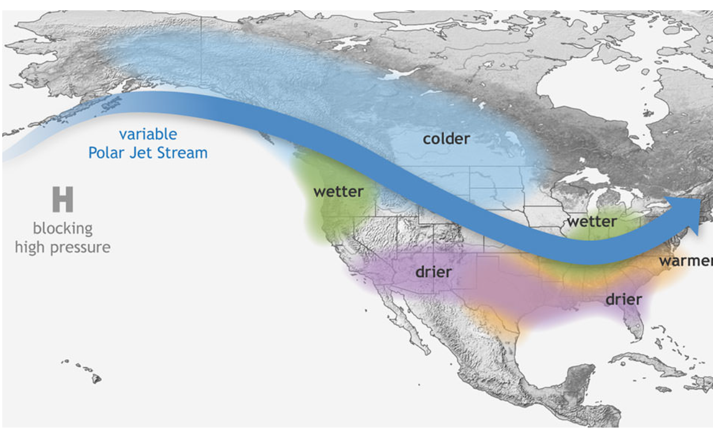
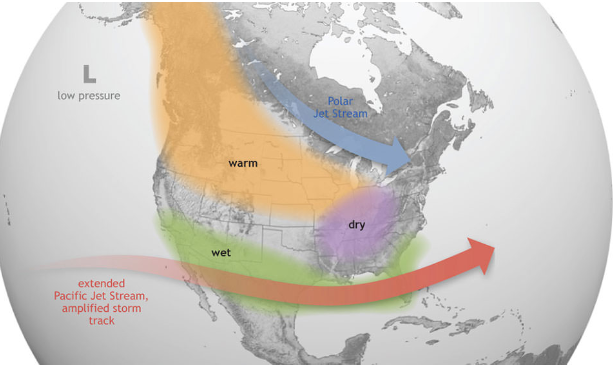
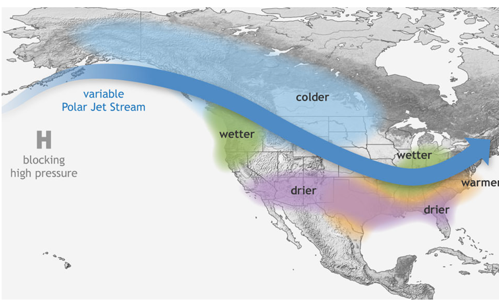
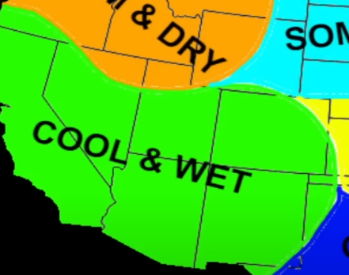
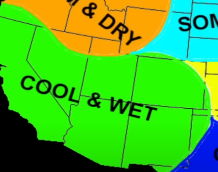

Welcome to my winter weather analysis of 2023-2024. I will present my current analysis of this winter's winter.
First, I would like to discuss the weather pattern. This year, winter weather will be dictated by a strong El Nino transiting into a moderate El Nino later in the winter.
This El Nino has the potential to be a great winter for snow lovers in the south, while some in the North may disappointed by the lack of snow due to more warm air blocking cold air from coming in the Northern tier of the United States of America.
With Negative N.A.O. A negative N.A.O. means a weak polar circle, which means a greater chance of a cold spell causing a massive cooldown in the United States.
First this winter trending toward a Moderate -Strong El Nino.
Last winter was a Weak La Nina with positive NAO which made Northwest wetter and Northern Midwest wetter meanwhile the South was dry and below average Normal El Nino would dry and warmern on the Northwest while the Northeast is wetter andd cooler.However this winter will be interesting
.I want to share my Possible Scenario for the Winter of 2023-2024 this Winter so. Most of my information is from websites or YouTube channels that have done term analyses, while others are combinations of both.Now, these early analyses may not be accurate in addition.
Temperature and Precipation
Typical ElNino temperature will be above average in the West and northern Mountian, all to the Great Lakes Region—below average precip.
Meanwhile, the Southern States have cooler temperatures and precipitation. Of course, like La Nina, not everyone. El Nino is the same or will be excellent in the south and warm in the north.
Many underlying factors play a massive part in the weather pattern, and they will react. Especially with this winter, this El Nino weird behavior has made it unpredictable. However, we have some models and videos that give a close enough analysis of what this will be like.
The Northern West Coast will be below average in precipitation and have above temperatures, which will significantly impact later on in the year as we get into summer and the drought kick, which could lead to massive fires that could burn more acres of land. So states such as Washington, Wyoming State, Montana, Idaho, and part of North and South Dakota.
On the Southern West Coast, the weather trend is slightly above to slightly below average. The temperature will warm and above average precip, and this will also mean increased snow chances in the Rookie Mountian and Serria Mountains. This will include states like Nevada, Colorado, New Mexico, and California.
The South Part 1Severe Storm and Rain
Lower Texas, Alamba, Georgia, and Florida, Lousina will be increased chancing of severe weather. Winter Precipitation is unlikely because the latitude of these areas rarely gets cold enough for that precipitation. It will be Cooler in addition the are likely chance of bad frost in some these southern area.
Missisipissi ,Gerogia, ALamba ,South Carolina
Tennesee Arakness will be a winter battle zone plus snowfall enhancement. While this area still gets Severe Storms,
the location is far north enough latitude-wise to receive Wintery Precipitation. Especially in El Nino Years, where the Cooler Air is more southward,
and the south gets a southern sliding winter storm because the winter storms that form in the south form and slide across the south before heading up north to the mid-Atlantic and areas like New York City.
 



 
